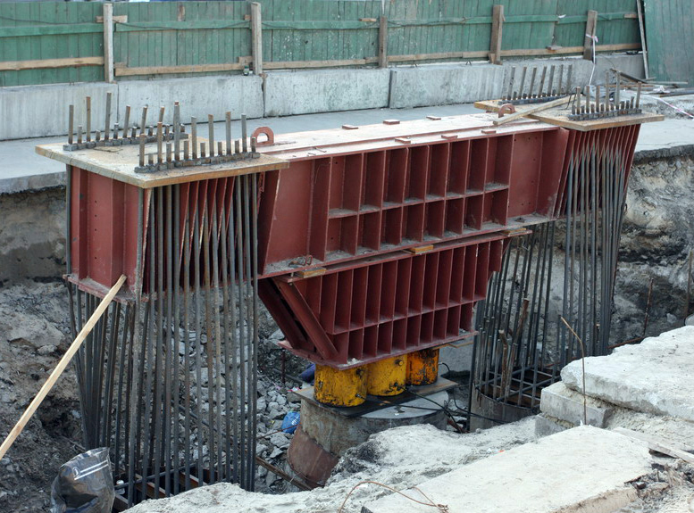

Виконуємо повний спектр пальових робіт: забивні, буронабивні та буроін’єкційні палі. Власний парк гідромолотів Junttan та Bruce забезпечує рекордну продуктивність — до 5 000 м³ паль на місяць.

Підприємство було засноване 11 березня 2003 року під беззмінним керівництвом директора Кузіка Віктора Федоровича. За понад два десятиліття ми пройшли шлях від локальної бригади до одного з найпотужніших спеціалізованих фундаментобудівних підприємств України.
Ми не вимиваємо кошти, а постійно інвестуємо в найсучаснішу техніку світових брендів: Bauer RG-20, O&K RH-25, Hitachi, Junttan, Bruce, Schwing. Комплексний інженерний підхід головного інженера Пелеханя В’ячеслава Вадимовича дозволяє оптимізувати проектні рішення пальового поля та суттєво економити бюджет замовника.
Ми виконуємо весь спектр робіт з нульового циклу та влаштування глибоких фундаментів у будь-яких геологічних умовах України.
 Основна спеціалізація
Основна спеціалізація
Занурення залізобетонних призматичних паль перерізом 300х300, 350х350, 400х400 мм цільними до 15 м та складеними до 24 м. Рекордна швидкість завдяки гідромолотам Junttan та Bruce.
 Велика несуча здатність
Велика несуча здатність
Влаштування паль великого діаметра методом шнекового або ковшового буріння з обсадними трубами. Ідеально підходить для мостових опор, важких промислових споруд та підпірних стін.
 CFA технологія
CFA технологія
Спорудження паль за технологією CFA (безперервний порожнистий шнек) у комплекті з потужним бетононасосом Schwing BPL 160-HD. Забезпечує високу швидкість та відсутність вібрацій поряд із сусідніми будівлями.
 Складні ґрунти
Складні ґрунти
Попереднє буріння направляючих свердловин установками СП-49 та СП-47 з буровою головкою СО-2. Дозволяє занурювати забивні палі через щільні шари піску, суглинку чи техногенного насипу без ризику руйнування палі.

Контроль якостіПроведення натурних статичних та динамічних випробувань паль за ДБН та ДСТУ. Власні важкі стенди, гідравлічні домкрати, вимірювальні прогиноміри та тензометричні станції з офіційними актами та графіками осідання.
 Безшумно та без вібрацій
Безшумно та без вібрацій
Занурення паль методом статичного вдавлювання зусиллям до 320 тонн або вдавлювання в обсадній трубі із наконечником, що втрачається (Fundex). Єдиний безпечний метод роботи безпосередньо біля аварійних або історичних будівель.
 Підземне будівництво
Підземне будівництво
Спорудження тримальних та протифільтраційних огороджень глибоких котлованів, підземних паркінгів та транспортних розв’язок. Влаштування тимчасових та постійних ґрунтових анкерів для надійної фіксації шпунтових стін.
 Під ключ
Під ключ
Комплексна підготовка основи: розробка котлованів, вивезення та планування ґрунту, механізована зрубка оголовків паль, армування та бетонування масивних монолітних ростверків під колони та силоси.
Ми гарантуємо дотримання найжорсткіших графіків будівництва та безкомпромісну якість кожного зануреного елемента.
Власний парк гідромолотів Junttan, BSP та BRUCE забезпечує енергію удару з точним регулюванням. Вони у 5 разів продуктивніші за дизельні молоти і не руйнують оголовки паль.
Ексклюзивні прямі контракти з корейським виробником гідравлічного обладнання Powerquip. Власна сервісна та ремонтна база забезпечує 100% безперебійність техніки.
Маємо повний парк автокранів (16–25 т), важких бульдозерів, вантажівок, дизельних електростанцій та побутових модулів. Не залежимо від сторонніх підрядників.
За наявності підготовленого під’їзду та авансування мобілізуємо техніку та починаємо забивання паль у будь-якій області України протягом 3-4 календарних днів.
Наші головні інженери допомагають замовникам знайти раціональні проектні рішення пальових полів, зменшити матеріаломісткість та уникнути помилок геології.
Маємо чинні державні ліцензії, дозволи Держгірпромнагляду на роботи підвищеної небезпеки. Видаємо повну виконавчу документацію з актами та журналами занурення.
Сучасні установки для забивання, вдавлювання та буріння паль, що гарантують безперебійний темп робіт у будь-яку пору року.

Базові машини Hitachi та Junttan, оснащені сучасними гідромолотами з вагою ударної частини від 3 до 7 тонн.
| Енергія удару: | до 85 кДж (регульована) |
| Довжина палі: | до 16 м (цільна), до 24 м (складена) |
| Продуктивність: | до 40-60 паль за робочу зміну |
Німецький буровий комплекс з обертачем WG-8 у зв’язці з бетононасосом Schwing BPL 160-HD для буроін’єкційних паль CFA.
| Технологія: | CFA (безперервний шнек) |
| Діаметр буріння: | 400 – 800 мм |
| Глибина паль: | до 20 метрів |

Потужна німецька машина з буровою головкою BB-10 для влаштування буронабивних паль під захистом обсадних труб.
| Крутний момент: | до 250 кНм |
| Діаметр паль: | до 1200 мм |
| Глибина: | до 28 метрів |
Сотні завершених об’єктів для флагманів агросектору, металургії, рітейлу та житлового будівництва по всій території України.
Влаштування пальових полів для силосів місткістю 50-100 тис. тонн. Десятки тисяч забивних паль перерізом 350х350 та 400х400 мм.
Швидкісне занурення пальових основ під каркаси великих торгівельних центрів із суворим дотриманням графіка відкриття.
Пальові фундаменти під важке технологічне обладнання, прокатні стани та цехові конструкції в умовах діючого виробництва.
Влаштування забивних та буронабивних паль, огородження шпунтом котлованів для нафтопереробних установок та резервуарів.
Пальові поля для 9-16 поверхових монолітно-каркасних та цегляних житлових комплексів із дитячою інфраструктурою.
Складені забивні палі довжиною до 20 метрів для важких силосів зерносховищ на складних посадочних ґрунтах.
Натисніть на фото для повнорозмірного перегляду високої роздільної здатності.


Надішліть нам дані інженерно-геологічних вишукувань та проектні навантаження — наші провідні інженери розрахують оптимальний тип паль, кількість та кошторис протягом 24 годин.
Пелехань В’ячеслав Вадимович:+38 (067) 532-97-90
Начальник ПТО Овсянніков Валентин:+38 (067) 530-50-58
Приймаємо креслення у форматах DWG, PDF, ZIP
м. Кременчук, Полтавська область, Україна
Швидка мобілізація техніки по всій Україні
Заповніть форму, і наш фахівець зателефонує вам найближчим часом.